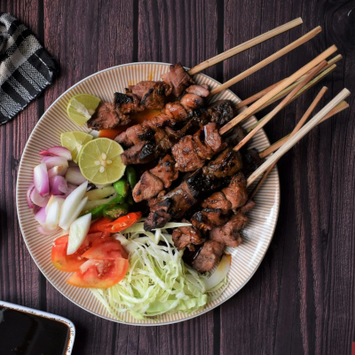

Sate Kambing

Description
Lamb is another popular meat to be made into satay in Indonesia. In Jakarta, Sabang street is probably the go to spot for a serving of lamb satay and lamb fried rice. Be warned though that you will need to eat by the road side, so be prepared to enjoy your dish with a whiff or two of smoke (and smog!) from passing cars and motorcycles. Or, just order it to go and enjoy the food in the comfort of your own home.
| Categories | : Main Dish |
| Cuisines | : Indonesian |
| Prep Time | : 45 mins |
Ingredients
Satay
- 500gram lamb thigh meat, cut into 1/2 inch cube
- 3 - 6 red bird eye chilies
- 1 tablespoon coriander powder
- 1/2 teaspoon salt
- 2 tablespoon sweet soy sauce
- 3 tablespoon oil, divided
- 30 bamboo skewers
Chili suace(mix the following together)
- 4 shallots
- 3 - 5 green bird eye chilies
- 4 talespoon sweet soy sauce
- 2 tomatoes, cut into small cubes
How to make
- Marinate lamb with chilies, coriander powder, salt, sweet soy sauce, and 1 tablespoon of oil for at least 2 hours in the fridge. Overnight is best.
- Return the lamb to room temperature prior to cooking. Skewer the meat to bamboo skewers, about 3 - 5 meat cubes per skewers.
- Heat 2 tablespoon of oil in a frying pan (or a grill pan if you have one) on medium high heat. Pan fry/grill satay until slightly charred on each side, about 2 - 3 minutes per side.
- Arrange cooked satay neatly in a serving plate. Serve immediately with chili sauce and chopped tomaotes.